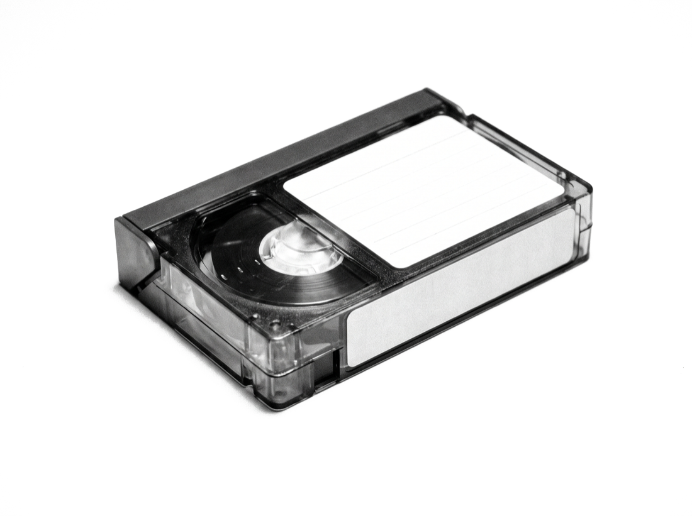
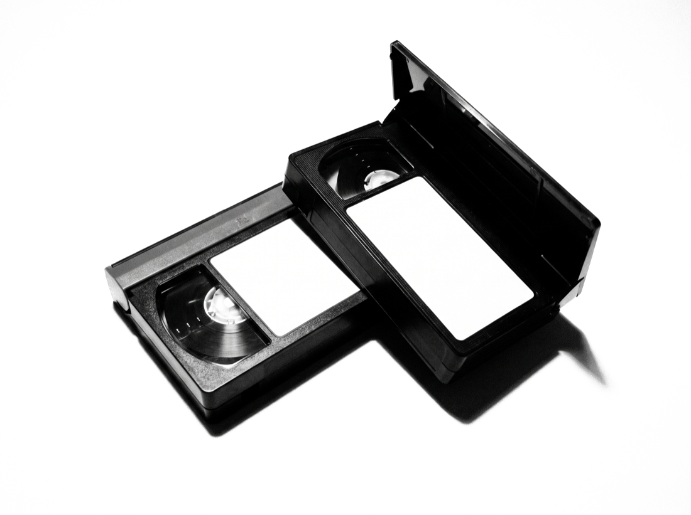
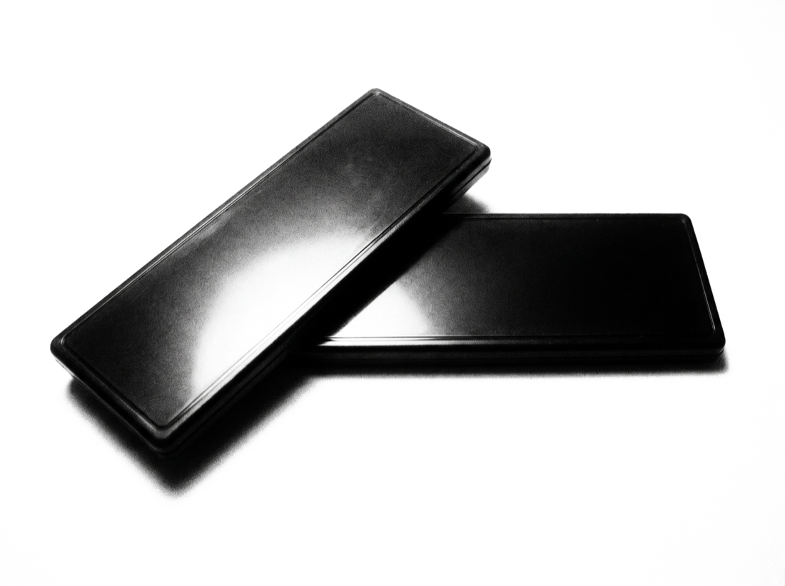

CAMCORDER PHOTOGRAPHY & VIDEO · SHOT ON TAPE
01/10
↗



ABOUT
RAW.RETRO is photography and video shot the long way round — on old Sony camcorders and Cybershots, straight to tape and card, 640×480 and proud of it.
Car meets, night runs, garages, gyms, whatever the night turns into. No cleanup, no reshoots, no gloss. The grain, the bloom on a headlight and the smear when the camera pans are the point — that is what it actually looked like, and a sharper sensor would only have lied about it.
Now taking bookings: concerts, weddings, events — anything you would rather have on tape than on a phone.